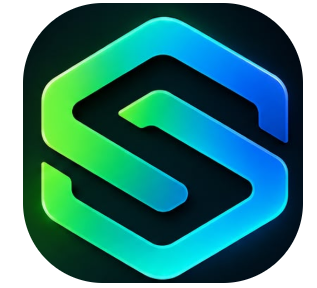

Usa tu propia cuenta
Abre la herramienta e inicia sesión en Google. Revisa los permisos solicitados y las políticas de tu institución.
Construye un proceso de selección paso a paso: compara perfiles, revisa sugerencias de IA y entrega un informe con trazabilidad.
Necesitas una cuenta Google y autorizar la aplicación. Cada participante guarda su trabajo en su propio Drive.
Abre la herramienta e inicia sesión en Google. Revisa los permisos solicitados y las políticas de tu institución.
Registra una empresa ficticia, crea una vacante y utiliza la burbuja para continuar donde va tu proceso.
Revisa el informe y Trazabilidad. Comparte con la docente los documentos que elijas desde tu Drive.
En clase trabajamos con personas y entrevistas inventadas. Las conclusiones se basan en requisitos laborales y evidencia textual; no en rostro, voz, apariencia o personalidad.

Caso con marca ALLSoftConoce el cargo, organiza tu primera semana y construye un plan de desarrollo con tu líder. Incluye situaciones de gestión documental en Bogotá, Medellín y Cali. Modelo de formación en contexto colombiano.
En el tour: Empresas → Logo → selecciona ALLSoft-logo.png. Carga el PDF en Documentos del kit. Conocer ALLSoft ↗
Actividades iniciales y lista de verificación para la primera semana.
Abrir PDF de bienvenida ↗Brechas, actividades propuestas e indicadores pendientes de revisión.
Abrir PDF del plan ↗Contenido de apoyo elaborado con NotebookLM y revisado para el ejercicio.
Abrir PDF de la guía ↗También están en Inicio → Material de práctica dentro de la herramienta. Los adjuntos son opcionales y se copian solo cuando lo solicitas.
Sí, si ese correo permite iniciar sesión en una cuenta Google. Un buzón Hotmail por sí solo no es una cuenta Google. Tu universidad puede restringir aplicaciones externas; si bloquea el acceso, consulta a su administrador o usa una cuenta personal permitida. No eludas las restricciones.
La app ejecuta las operaciones con tu identidad y usa tu propia hoja de datos. Los demás participantes no reciben acceso automáticamente. Tú decides qué archivos compartes con la docente.
No. Gemini tiene cuotas y puede requerir espera. La clave compartida también comparte capacidad. Qwen local es una alternativa en evaluación, todavía no conectada a esta aplicación. Si la IA no está disponible puedes continuar registrando evidencias y valoraciones humanas.
La matriz ponderada, evidencia de entrevista, análisis revisado, decisión argumentada, plan o acuerdos y el informe. Trazabilidad permite revisar las acciones registradas; los ejemplos de clase no demuestran acciones reales.
No. El envío es opcional, requiere destinatario, vista previa y confirmación. Revisa el plan y los documentos del kit antes de enviarlos.
Copia este texto para el aula virtual o el grupo de clase: